17 Clusters in Proxmox¶
17.1 Doelstellingen¶
Na dit hoofdstuk beheerst de student het volgende:
-
de voordelen van een cluster opsommen: hoge beschikbaarheid, belasting verdelen, back-up en herstel, live migratie en redundantie;
-
drie nodes voorbereiden door een bestaande Proxmox-installatie te kopiëren, en per node het IP-adres, de naam van de netwerkkaart en de hostname correct instellen;
-
met pvecm en via de webinterface een cluster aanmaken en er de andere nodes aan toevoegen;
-
uitleggen wat Corosync en het Proxmox Cluster File System doen, en aantonen dat /etc/pve op alle nodes gelijk is;
-
het verschil uitleggen tussen migratie met en zonder gedeelde opslag, en een virtuele machine in beide gevallen live naar een andere node verplaatsen;
-
uitleggen wat Ceph is en welke rol monitors, OSD's, managers en pools daarin spelen;
-
Ceph op het cluster installeren: de software installeren, de configuratie initialiseren, monitors, OSD's en managers aanmaken en een pool instellen;
-
high availability instellen met ha-manager en aantonen dat een virtuele machine na het uitvallen van een node elders opnieuw start;
-
met affinity rules bepalen op welke nodes een virtuele machine mag draaien, en welke machines samen of apart moeten draaien;
-
uitleggen wat fencing is en hoe Proxmox een node zonder quorum met een watchdog uitschakelt.
17.2 Waarom meerdere Proxmox-servers?¶
Een cluster bestaat uit minstens drie nodes, zodat er bij een storing een meerderheid overblijft. Zo'n cluster levert een aantal concrete voordelen op:
-
Hoge beschikbaarheid: valt een node uit, dan start een andere node zijn virtuele machines en containers vanzelf opnieuw op. Voor toepassingen waarbij uitval niet aanvaardbaar is, is dat het belangrijkste argument.
-
Dat werkt enkel met gedeelde opslag, bijvoorbeeld NFS, iSCSI of Ceph: de gegevens van een machine moeten vanaf elke node bereikbaar zijn.
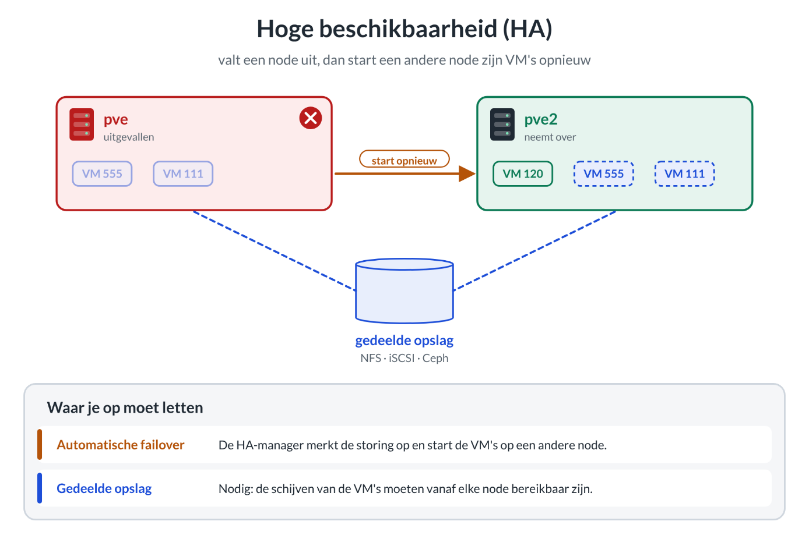
-
Belasting verdelen: je spreidt de virtuele machines over de nodes, zodat geen enkele server overbelast raakt.
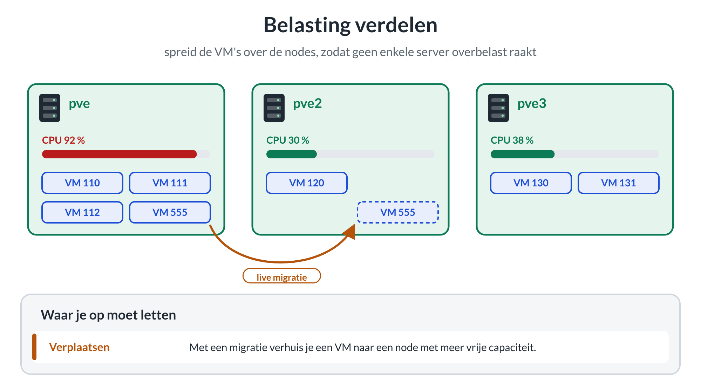
-
Back-up en herstel: je kan snapshots en back-ups van de ene node naar de andere kopiëren. Na een hardwarestoring zet je een machine gewoon elders terug.
-
Live migratie: je verplaatst een draaiende machine naar een andere node zonder dat ze stilvalt. Zo neem je een server in onderhoud terwijl de dienst blijft draaien.
-
Redundantie: je bent niet langer afhankelijk van één machine. Valt er een schijf, een geheugenmodule of een netwerkverbinding weg, dan draait de rest verder.
In dit hoofdstuk zetten we zo'n cluster zelf op.
17.3 De opstelling¶
We bouwen deze opstelling: drie nodes in één cluster.
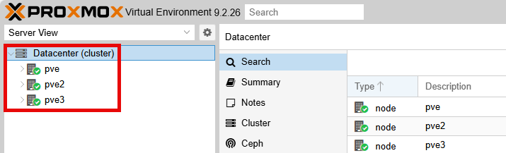
Elke node krijgt een vast IP-adres. Alle drie de nodes zijn een kopie van Proxmox Clean, dus ook pve krijgt hier een nieuw adres.
| Hostname | IP |
|---|---|
| pve | 192.168.112.110 |
| pve2 | 192.168.112.120 |
| pve3 | 192.168.112.130 |
17.4 Nodes aanmaken en configureren¶
17.4.1 Mappen kopiëren¶
Kopieer de map van je VM Proxmox Clean drie keer, zoals hieronder. Elke kopie wordt één node: pve, pve2 en pve3.
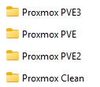
Je kan de VM ook klonen via het menu van VMware. Het resultaat is hetzelfde.
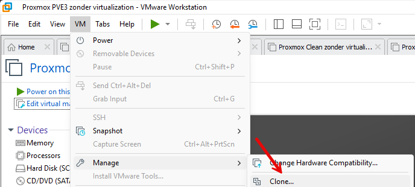
17.4.2 IP-nummer instellen¶
We tonen de instellingen op pve2. Doe hetzelfde op pve en pve3, elk met het eigen IP-adres uit de tabel.
Start pve2.
Belangrijk: Kies bij de eerste start voor I Copied It. VMware geeft de kopie dan een nieuw MAC-adres. Zo heeft elke node een eigen netwerkkaart en zitten ze elkaar op het netwerk niet in de weg.
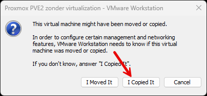
-
Log in op de console van de VM zelf. Via SSH lukt het nog niet, want het netwerk werkt nog niet.
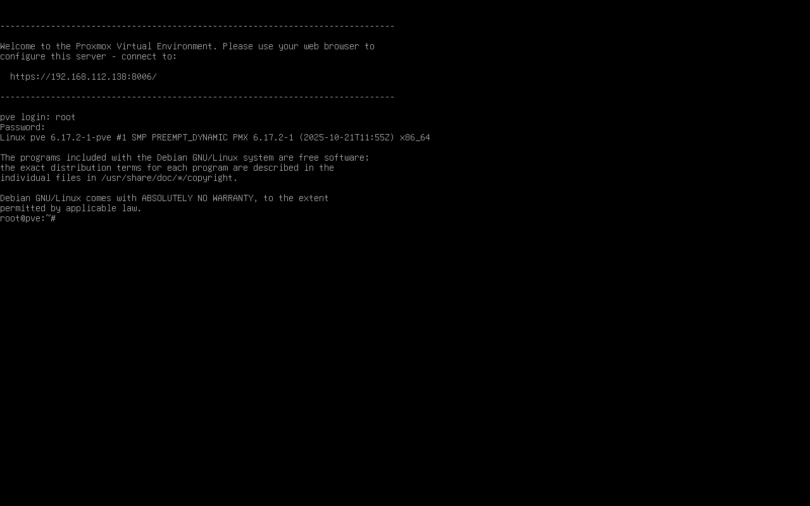
-
Controleer de huidige netwerkconfiguratie
Bekijk de huidige netwerkconfiguratie om te zien welke instellingen actief zijn:
root@pve:~# ip a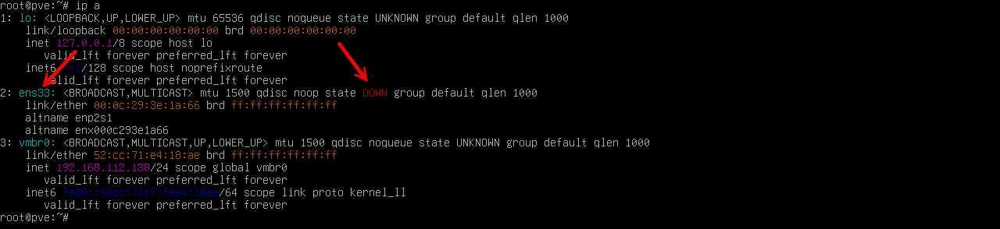
Je ziet DOWN staan bij ens33.
Hoe komt dat? Proxmox 9 geeft de netwerkkaart bij de installatie een vaste naam, nic0, die gekoppeld is aan het MAC-adres van de kaart. Door I Copied It heeft de kopie een nieuw MAC-adres. De naam nic0 geldt dan niet meer, en de kaart heet weer ens33. In /etc/network/interfaces staat nog nic0, dus de bridge vmbr0 vindt haar netwerkkaart niet.
- Bewerk het netwerkconfiguratiebestand
Proxmox gebruikt standaard /etc/network/interfaces om netwerkinstellingen te beheren. Open dit bestand met een teksteditor:
root@pve:~# nano /etc/network/interfaces
- Stel een gewijzigd IP-adres in en fix de naam van de netwerkkaart
Zoek in de configuratie naar nic0 en verander dat in ens33. Je moet dat twee keer wijzigen. Pas ook de IP-nummer aan. Je moet onderstaand resultaat bekomen:
auto lo iface lo inet loopback iface ens33 inet manual auto vmbr0 iface vmbr0 inet static address 192.168.112.120/24 gateway 192.168.112.2 bridge-ports ens33 bridge-stp off bridge-fd 0 source /etc/network/interfaces.d/*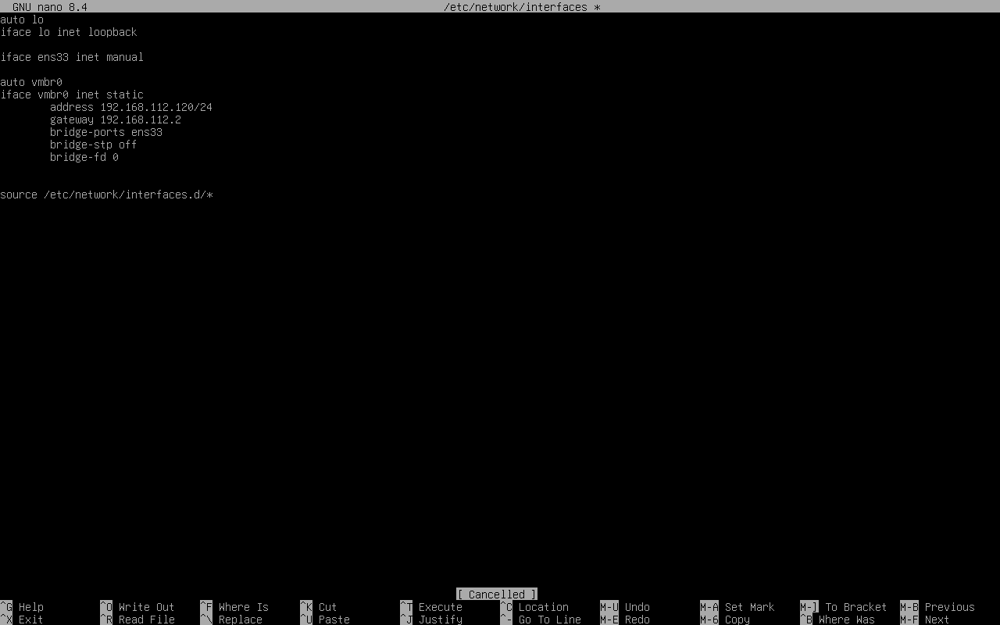
Sla het bestand op.
- Configuratie controleren
Controleer het configuratiebestand op fouten voordat je het toepast:
root@pve:~# ifup --no-act ens33
- Herstart de VM:
root@pve:~# reboot
- Controleer de nieuwe configuratie
Controleer of de interface nu het ingestelde IP-adres gebruikt:
root@pve:~# ip a
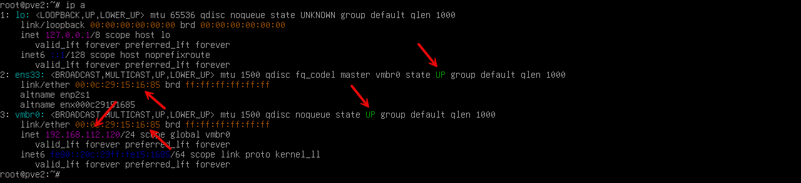
- Test de verbinding
Test of het vaste IP-adres correct werkt:
root@pve:~# ping www.google.be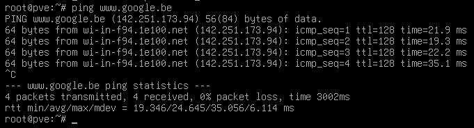
17.4.3 Hostname instellen¶
- SSH
Log nu vanaf je eigen pc via SSH in op pve2.
PS C:\Users\student> ssh root@192.168.112.120
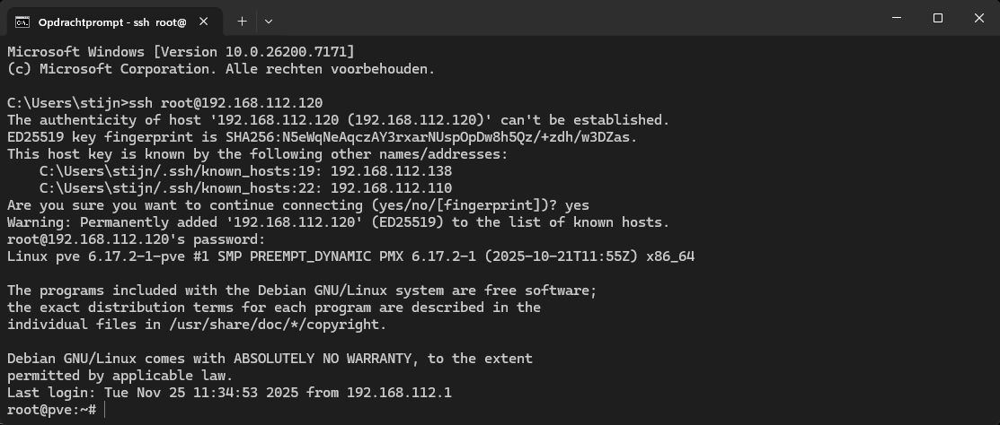
- Controleer de huidige hostname
Voer het volgende commando uit om de huidige hostname te controleren:
root@pve:~# hostname pveDe naam staat nog op pve. Dat moet pve2 worden.
-
Pas de hostname aan
Verander de hostname op de volgende locaties:- /etc/hostname
Bewerk het bestand met een teksteditor, zoals nano:
- /etc/hostname
root@pve:~# nano /etc/hostname pve2Vervang de oude hostname dus door de nieuwe hostname pve2.
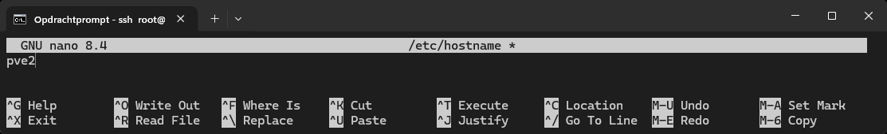
Sla het bestand op en sluit de editor.
- /etc/hosts
Bewerk het bestand:
root@pve:~# nano /etc/hosts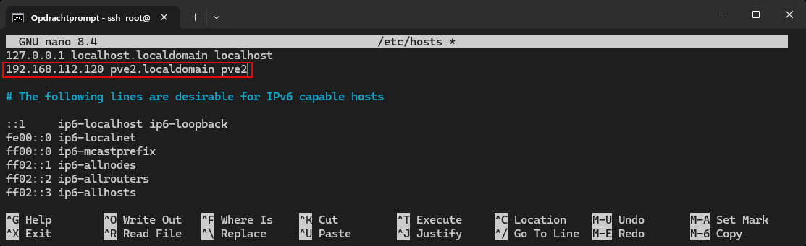
Let op: pas ook het IP-adres aan naar 192.168.112.120.
- Herstart de server
Voor een volledige toepassing van de wijzigingen, herstart je best de server:
root@pve:~# reboot
- Check inlog
Je prompt toont nu root@pve2.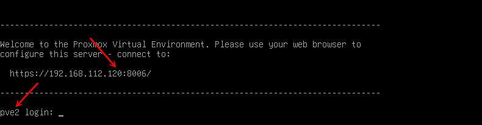
17.5 Het cluster aanmaken¶
17.5.1 Inleiding¶
We voegen de drie nodes nu samen tot een cluster.
Dat gaat in drie stappen:
-
op pve maken we een nieuw cluster aan;
-
we voegen pve2 toe aan het cluster;
-
we voegen pve3 toe aan het cluster.
Belangrijk: een node die je aan een cluster toevoegt, mag nog geen virtuele machines of containers hebben. Hun ID's zouden kunnen botsen met die in het cluster, en daarom weigert Proxmox de toetreding. Maak je VM's dus pas aan als het cluster klaar is.
17.5.2 Voorbereiding¶
Eerst zorgen we dat de nodes elkaar op naam vinden. Dat regelen we in /etc/hosts.
Op pve ziet dat er zo uit:
root@pve:~# nano /etc/hosts
192.168.112.120 pve2.localdomain pve2
192.168.112.130 pve3.localdomain pve3
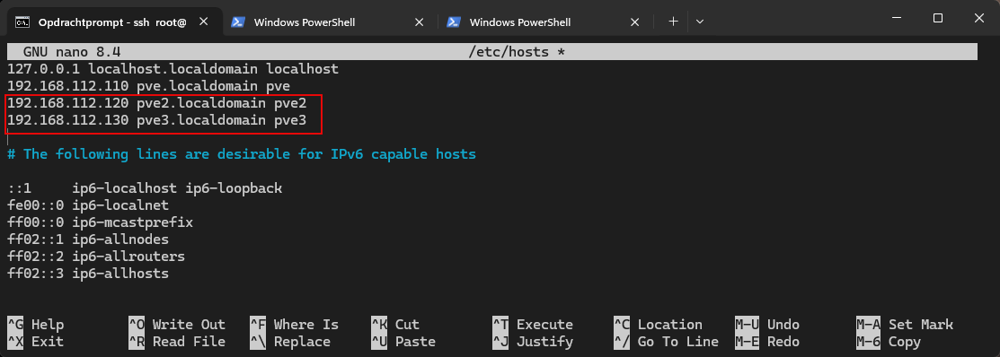
Zet op elke node de regels voor de twee andere nodes in /etc/hosts.
17.5.3 pve¶
Log via SSH in op pve.
Proxmox heeft hiervoor de tool pvecm, de Proxmox VE Cluster Manager.
root@pve:~# pvecm help
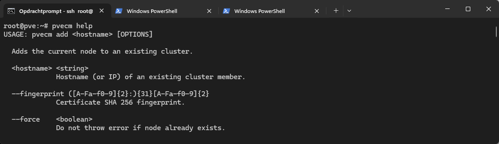
Met pvecm maak je een cluster aan, voeg je nodes toe of verwijder je ze, en vraag je de status van het cluster op.
Een cluster maak je met pvecm create, gevolgd door de naam van het cluster.
root@pve:~# pvecm create cluster1
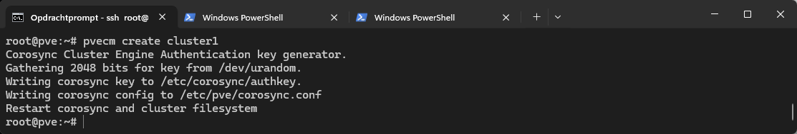
Dat is alles: het cluster cluster1 bestaat nu.
Je ziet het ook in de webinterface.
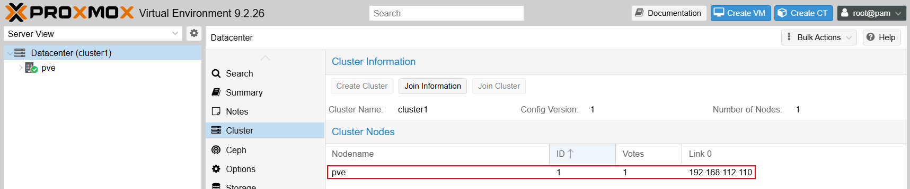
17.5.4 pve2¶
Nu voegen we pve2 toe aan het cluster.
Dat doe je op pve2 met pvecm add, gevolgd door de naam of het IP-adres van een node die al in het cluster zit, hier pve.
root@pve2:~# pvecm add pve
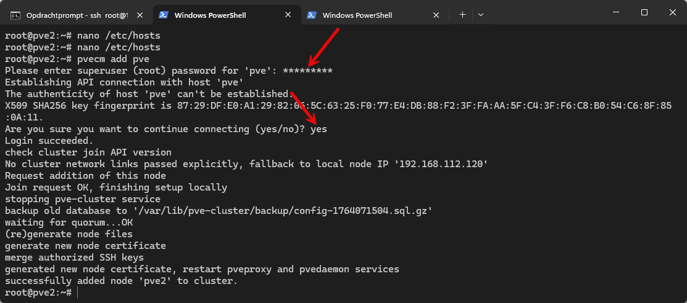
Geef het rootwachtwoord van pve in en bevestig met yes.
De melding "The authenticity of host 'pve' can't be established" verschijnt omdat pve een zelfondertekend certificaat gebruikt. pve2 kan dus niet controleren of het echt met pve praat. In het labo bevestig je gewoon; in productie vergelijk je eerst de vingerafdruk.
pve en pve2 zitten nu samen in het cluster.
17.5.5 pve3¶
Tot slot voegen we pve3 toe, dit keer via de webinterface.
Surf naar https://192.168.112.110:8006 of https://192.168.112.120:8006.
Op beide adressen zie je nu twee nodes.
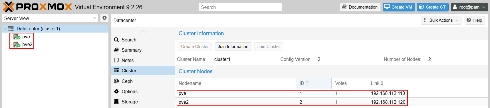
Klik bij Datacenter op Cluster en daarna op Join Information.
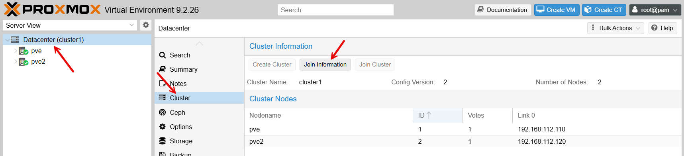
Klik op Copy Information.
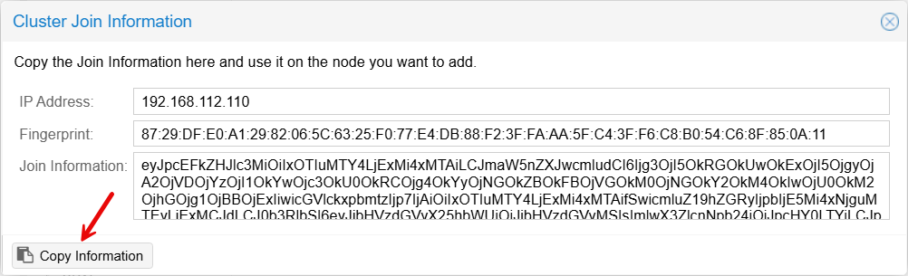
Surf nu naar https://192.168.112.130:8006, de webinterface van pve3.
Kies daar Datacenter, Cluster en daarna Join Cluster.
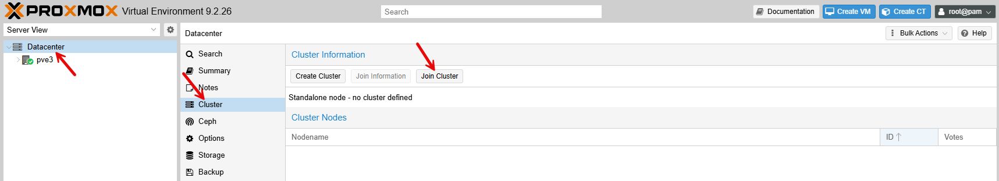
Plak de informatie met Ctrl+V in het veld Information, vul het rootwachtwoord van pve in en klik op Join 'cluster1'.
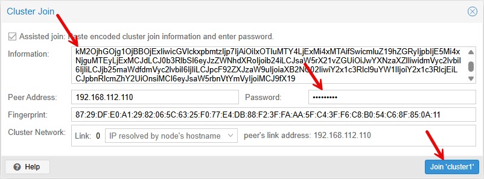
Je beheert nu alle drie de nodes vanuit één webinterface, op welk van de drie adressen je ook surft.
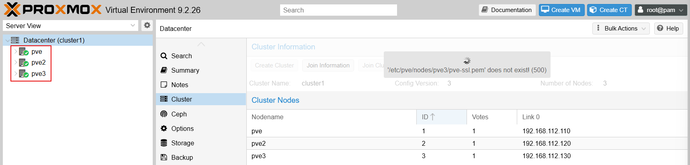
Je hebt nu een cluster dat je centraal beheert. Je kan virtuele machines aanmaken en tussen de nodes verplaatsen, maar nog niet alle mogelijkheden van een cluster zijn beschikbaar.
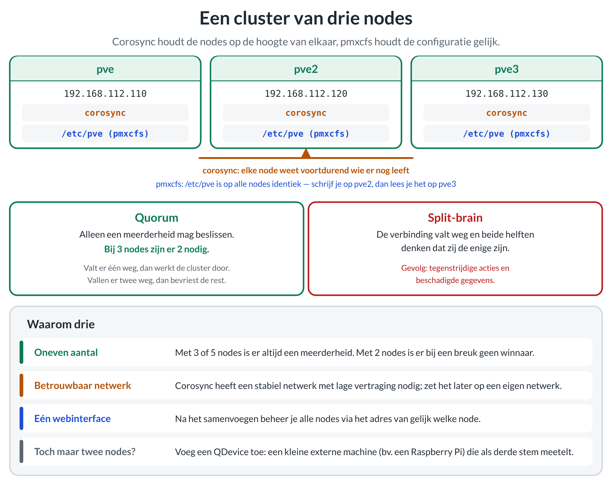
Toch maar twee nodes? Dat kan met een QDevice, een derde stem buiten de cluster. In Windows Failover Clustering is zo'n witness vaak een gedeelde schijf of een share. In Proxmox is het geen opslag, maar een kleine dienst (corosync-qnetd) op een andere machine. In een bedrijf zet je die meestal op de back-upserver of een NAS; in een labo volstaat een kleine VM op andere hardware of een Raspberry Pi.
17.6 Hoe een cluster werkt¶
17.6.1 Algemeen¶
Er is nog geen gedeelde opslag. Daardoor werkt high availability nog niet, en moet bij een migratie van een VM bijvoorbeeld de volledige schijf van de VM mee over het netwerk. Om te begrijpen waarom, kijken we eerst naar de twee technologieën waarop een Proxmox-cluster draait:
De belangrijkste technologieën die gebruikt worden in de cluster:
-
Corosync: Een communicatiesysteem dat servers in het cluster informeert over de status van andere leden.
-
Corosync heeft een betrouwbaar netwerk met lage latency nodig.
-
Valt Corosync weg, dan verliest het cluster zijn quorum.
-
Corosync zorgt ervoor dat servers elkaars status kunnen zien.
-
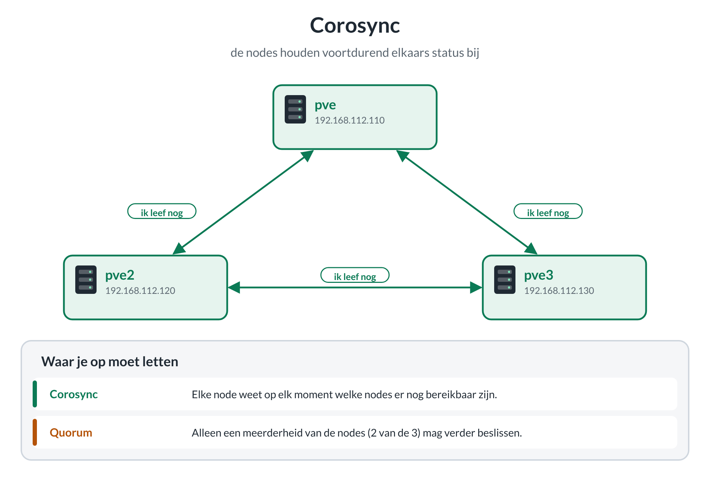
- Proxmox Cluster File System (PMXCFS): Een databasegestuurd bestandssysteem dat configuratiebestanden in real-time repliceert naar alle servers in het cluster. Dit wordt gemount onder /etc/pve.
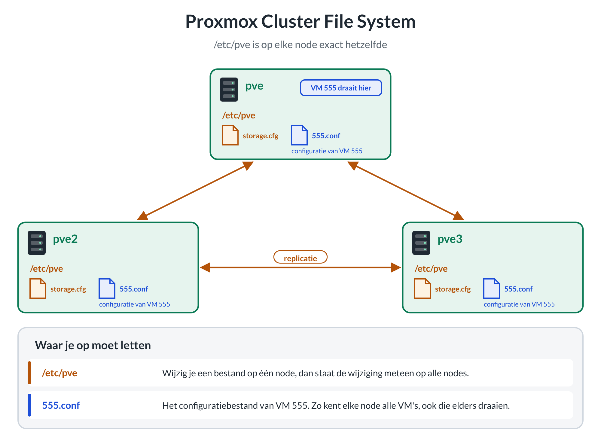
Samen zorgen ze ervoor dat elke node weet welke VM's en containers er in het cluster zijn, en waar ze draaien. Valt een node uit, dan kan de HA-manager die machines op een andere node opnieuw starten. Dat bekijken we verderop.
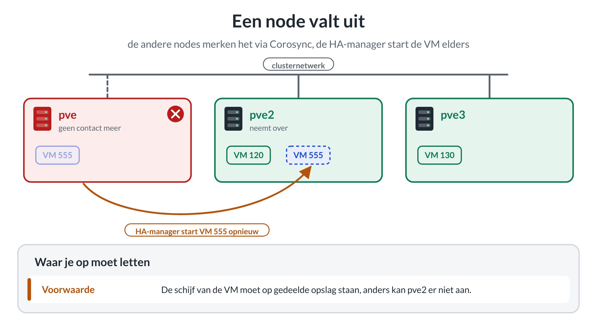
Wat is een virtuele machine eigenlijk, gezien vanuit de hypervisor?
Ten eerste is een VM een configuratiebestand. Daarin staat alles over de VM: de processor, de hoeveelheid geheugen, de schijven, de netwerkkaarten, enzovoort. Om een VM te starten, leest de hypervisor dit bestand, reserveert hij wat nodig is en bootst hij de hardware na zoals het bestand beschrijft.
Ten tweede is er de schijf, de image, die als opslag aan de VM gekoppeld is.
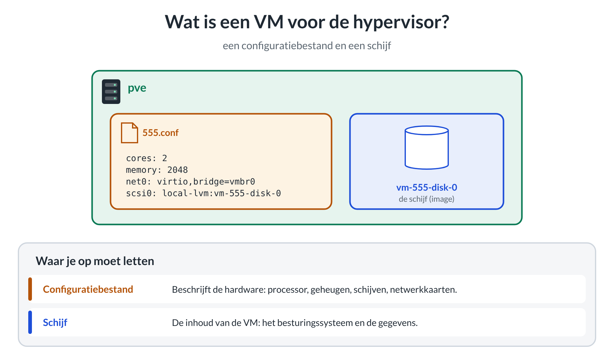
17.6.2 Migratie tussen losse servers¶
Stel dat je een VM wil verplaatsen tussen losse servers, zonder cluster.
Dan moet je zelf het configuratiebestand naar de andere server kopiëren, en daarna de schijf. Pas dan kan de VM daar starten.
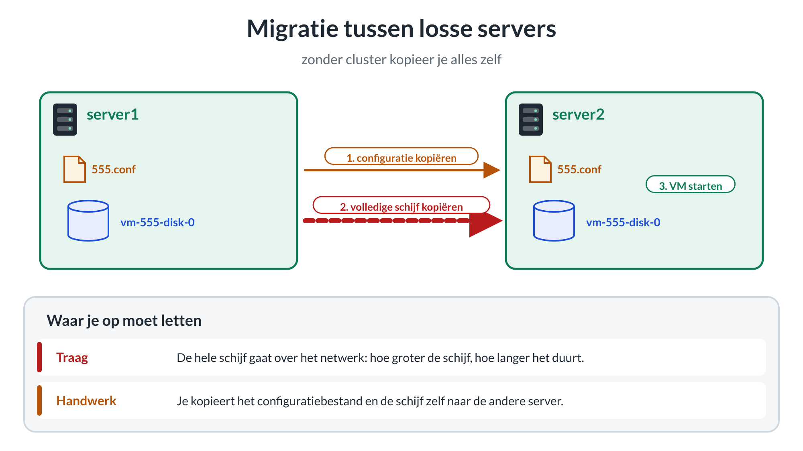
17.6.3 Migratie in een cluster¶
In een Proxmox-cluster werken de nodes samen: ze vertrouwen elkaar en bewaren hun configuratiebestanden in een gedeeld, gerepliceerd bestandssysteem.
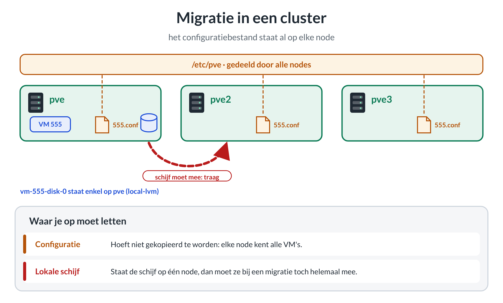
Maak je een VM aan op pve, dan schrijft Proxmox haar configuratiebestand in het Proxmox Cluster File System. Dat bestand staat meteen op alle nodes.
Bij een migratie hoeft het configuratiebestand dus niet gekopieerd te worden: elke node kent al alle VM's van het cluster.
Staan de schijven bovendien op gedeelde opslag, zoals een SAN, een NAS of Ceph, dan kan elke node ook aan de schijf van de VM.
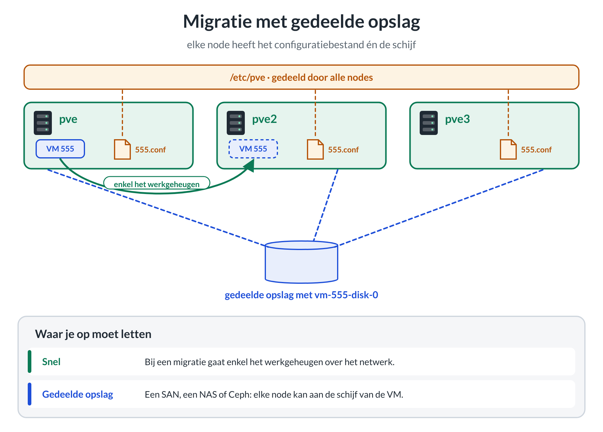
Elke node heeft dan zowel het configuratiebestand als de schijf. Bij een migratie moet enkel nog het werkgeheugen over het netwerk.
- Maak een SSH-verbinding met pve.
We bekijken de inhoud van /etc/pve.
root@pve:~# ls /etc/pve
Omdat het een gerepliceerd bestandssysteem is, ziet de inhoud er op alle nodes hetzelfde uit.
Bekijk bijvoorbeeld het configuratiebestand van de opslag.
root@pve:~# cat /etc/pve/storage.cfg
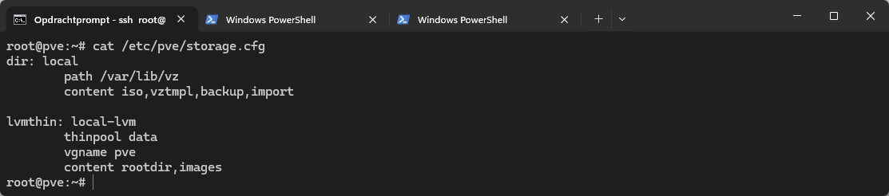
- Maak nu een SSH-verbinding met pve2.
Het configuratiebestand ziet er precies hetzelfde uit.
root@pve2:~# cat /etc/pve/storage.cfg
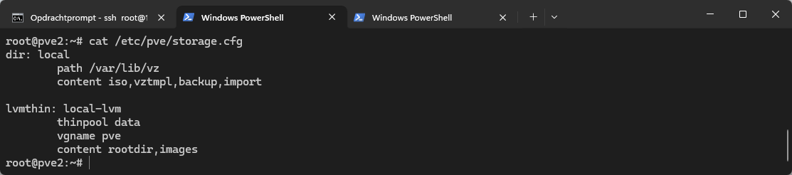
Let op: dit is de beschrijving van de opslag, niet de opslag zelf. storage.cfg zegt dat elke node een opslag local heeft in /var/lib/vz en een opslag local-lvm op de thin pool pve/data. Maar elke node gebruikt daarvoor zijn eigen schijf: dezelfde naam, een andere inhoud. Dat merk je zo:
-
een ISO die je op pve naar local uploadt, zie je niet in local van pve2;
-
de schijf van een VM op local-lvm van pve bestaat niet op pve2. Daarom moet bij een migratie de hele schijf mee.
Daarom zie je in de webinterface onder elke node een eigen local en local-lvm.
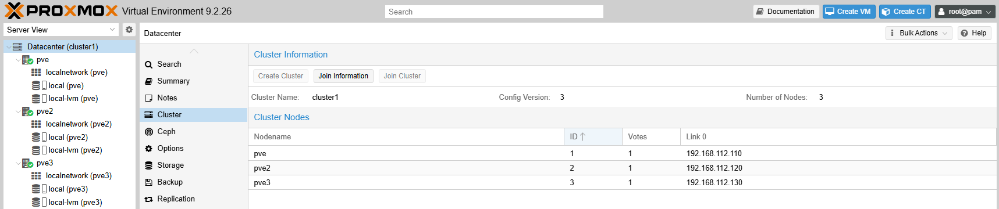
Bij gedeelde opslag, zoals NFS, iSCSI of Ceph, is dat anders. Daar staat de opslag zelf maar één keer in het netwerk, en zien alle nodes dezelfde inhoud.
Maak op pve2 een testbestand aan in /etc/pve:
root@pve2:~# echo "message from server two" > /etc/pve/test.log
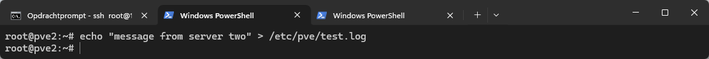
- Maak nu een SSH-verbinding met pve3.
Lees het bestand op pve3:
root@pve3:~# cat /etc/pve/test.log
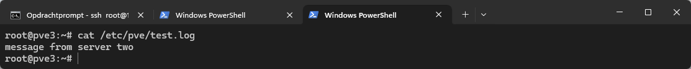
Het bestand dat je op pve2 schreef, staat ook op pve3 (en pve). Proxmox repliceert alles in /etc/pve naar alle nodes. Verwijder het testbestand daarna weer met rm /etc/pve/test.log.
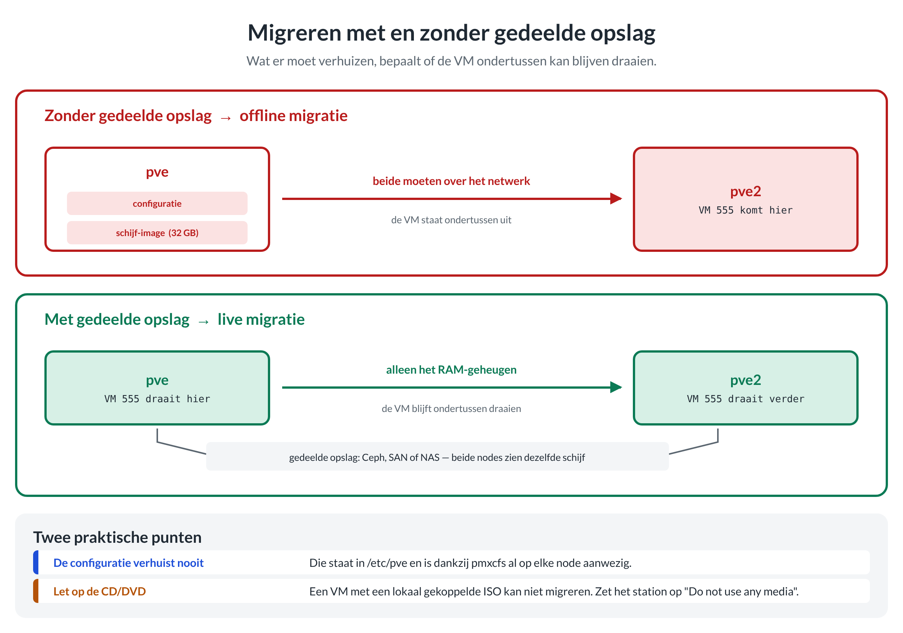
17.7 Voorbeeld: migratie zonder gedeelde opslag¶
Vanaf nu beheer je het cluster vanuit één webinterface. Je kan er back-ups inplannen, opslag toevoegen en virtuele machines tussen de nodes verplaatsen.
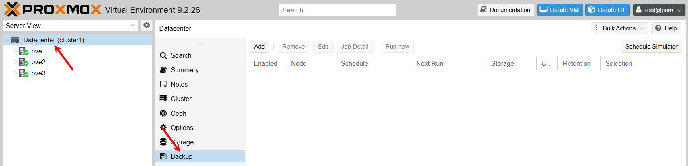
Zonder gedeelde opslag kan Proxmox een draaiende VM wel verplaatsen, maar dan moet de volledige schijf mee over het netwerk. Dat duurt lang. We proberen het uit.
Maak daarvoor eerst opnieuw de Alpine-VM aan op pve.
Start de VM. We verplaatsen ze nu van pve naar pve2.
Klik met de rechtermuisknop op de VM en kies Migrate.
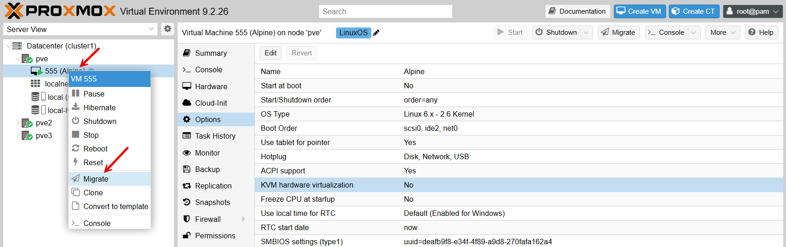
Je krijgt een foutmelding: een VM met een lokale cd/dvd kan je niet verplaatsen. De ISO staat immers alleen op pve.
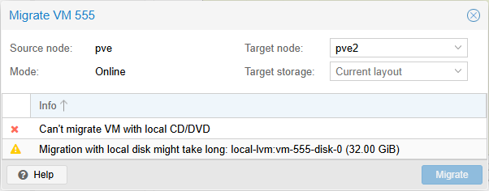
Pas daarom de hardware van de VM aan: dubbelklik bij Hardware op CD/DVD Drive.
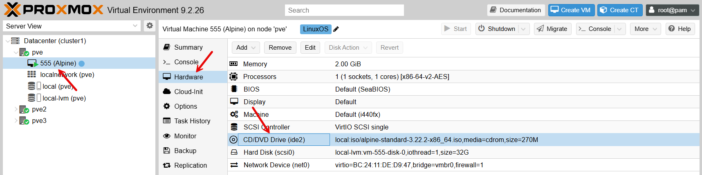
Kies Do not use any media en klik op OK.
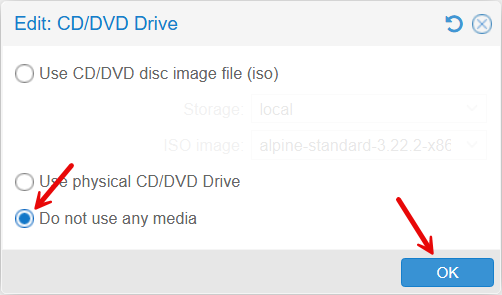
Probeer de VM opnieuw te verplaatsen.
Kies als doel pve2. Bij Mode staat Online: de VM blijft draaien tijdens de migratie.
Proxmox waarschuwt dat de migratie lang kan duren, omdat de lokale schijf mee moet. Klik toch op Migrate.
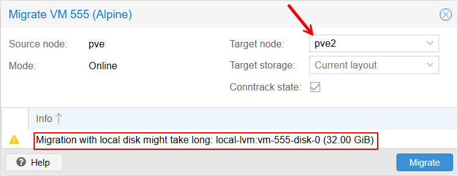
De migratie loopt. In het logboek zie je hoe de schijf stap voor stap naar pve2 gekopieerd wordt.
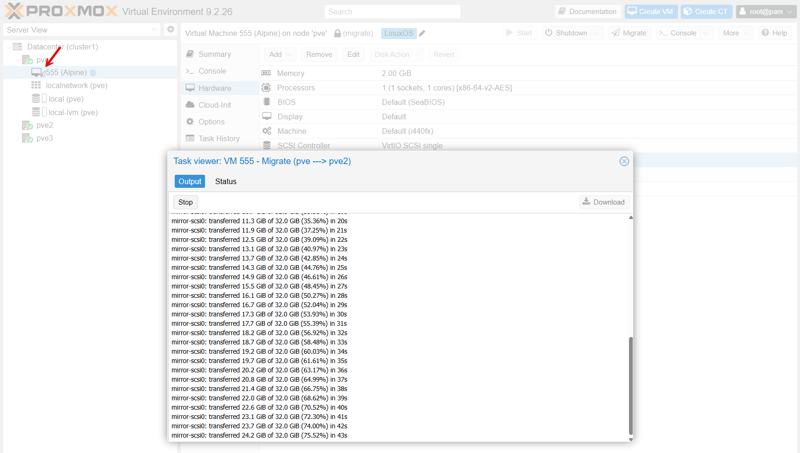
De VM blijft draaien zolang de schijf gekopieerd wordt. Pas helemaal op het einde ligt ze heel even stil, terwijl het werkgeheugen overgaat. Daarna draait de VM op pve2.
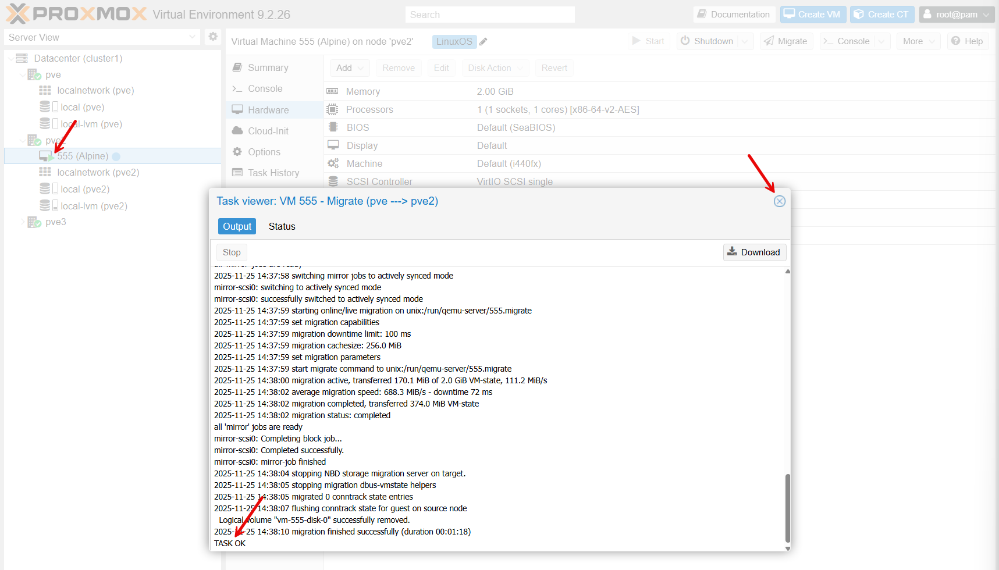
Het werkt, maar het duurt lang, en hoe groter de schijf, hoe langer. Bovendien kan Proxmox de VM niet elders starten als pve plots uitvalt: de schijf staat dan op een node die er niet meer is. Daarom werken bedrijven met gedeelde opslag waar alle nodes aan kunnen.
17.8 Ceph¶
17.8.1 Introductie tot Ceph-opslag¶
Ceph is een softwarematige, redundante opslagoplossing, gebouwd voor hoge beschikbaarheid en goede prestaties. Eenvoudig gezegd voegt Ceph de schijven van meerdere servers samen tot één grote opslagruimte over het netwerk. Heb je drie servers met elk drie schijven, dan krijg je één opslagruimte van negen schijven.
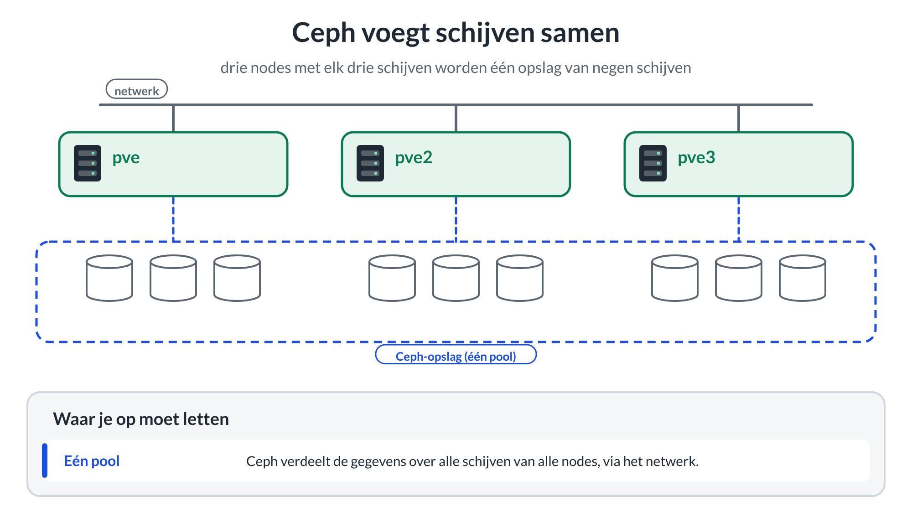
Ceph bewaart alle gegevens meerdere keren. Dat aantal kopieën, het aantal replica's, stel je zelf in; voor productie raadt men er minstens drie aan. Ceph zet elke kopie op een andere node. Met drie replica's staat elk stukje gegevens dus één keer op pve, één keer op pve2 en één keer op pve3, los van hoeveel schijven elke node heeft. Heb je meer nodes, bijvoorbeeld vijf, dan komt elk stukje op drie van de vijf nodes, telkens een andere combinatie; zo doen alle nodes mee. Valt een schijf of zelfs een hele node uit, dan zijn er nog altijd twee kopieën via het netwerk beschikbaar.
De schijven voor Ceph (hier 3 per node, maar dat kunnen er meer of minder zijn) zet je niet in RAID: Ceph zorgt zelf voor de kopieën over de nodes heen, en wil daarom elke schijf rechtstreeks als aparte OSD (Object Storage Daemon) zien.
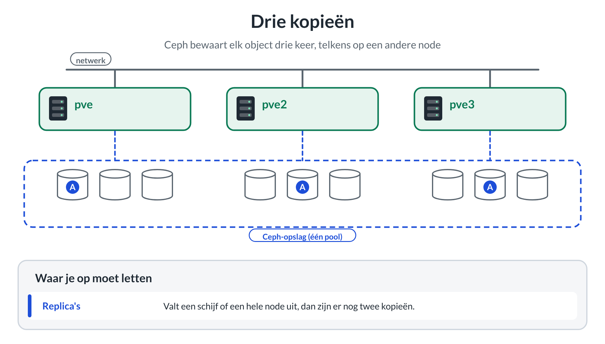
Daarnaast is Ceph een zelfherstellend systeem. Als een kopie van de gegevens ontbreekt of inconsistent wordt, zal Ceph automatisch een nieuwe kopie maken om de replicatiefactor van de opslagpool te waarborgen. Hierdoor kan het cluster meerdere schijven of zelfs servers verliezen zonder gegevensverlies.
Dat kost natuurlijk opslagcapaciteit: met drie replica's kan je maar een derde van de totale schijfruimte gebruiken.
17.8.2 Belangrijke componenten van Ceph¶
-
Monitor (MON):
Een monitor bewaart een masterkopie van de clustermap en houdt de algemene status van het Ceph-cluster bij. Voor productie gebruik je minstens drie monitors, en altijd een oneven aantal. -
Object Storage Daemon (OSD):
Een OSD is een proces dat communicatie met individuele schijven mogelijk maakt. Voor elke fysieke schijf in het cluster moet een aparte OSD draaien. Als een server bijvoorbeeld drie schijven heeft, zijn er drie OSD-processen nodig. -
Manager (MGR):
De manager verzamelt statistieken over het Ceph-cluster en levert de Ceph-pagina's in de webinterface. Er is altijd maar één actieve manager; extra managers staan stand-by en nemen over als die uitvalt.
Ceph heeft geen single point of failure. De client communiceert direct met alle schijven in het cluster zonder tussenliggende gateways of bottlenecks. Dit zorgt voor een robuuste en schaalbare opslagoplossing.
Dus als een client gegevens in een cluster wil lezen of schrijven, zijn er twee stappen nodig:
-
Stap één: De client moet beschikken over de nieuwste clustermap, aangezien de clustermap informatie bevat over alle OSD's in het cluster.
-
Stap twee: Aan de hand van de informatie uit de clustermap past de client het Crush-algoritme toe om te bepalen met welke OSD het moet communiceren om een specifiek object te lezen of te schrijven.
Samenvatting:
-
Ceph is een softwaregedefinieerde opslagoplossing (toepassing).
-
Het biedt redundantie en is zelfherstellend.
-
Er zijn geen SPOF (Single Point of Failure).
-
Er is minstens één monitor nodig om de clustermap en de status bij te houden; voor productie zijn het er drie.
-
OSD (Object Storage Daemon) maakt directe communicatie met een opslagstation via het netwerk mogelijk, waarbij clients gebruikmaken van het Crush-algoritme om rechtstreeks met elke OSD te communiceren.
17.8.3 Installatie¶
17.8.3.1 Vooraf¶
De installatie ziet er technisch uit, maar ze is rechtlijnig.
Proxmox heeft er een eigen tool voor: pveceph.
root@pve:~# pveceph help
Het besturingssysteem moet wel correct voorbereid zijn:
-
een correct ingesteld /etc/hosts;
-
ingestelde repositories;
-
alle nodes in hetzelfde subnet;
-
een juist ingestelde tijd.
Synchroniseer de klok nog eens met de tijdserver:
root@pve:~# chronyc makestep
200 OK
Controleer de tijd:
root@pve:~# date
Tue Nov 25 03:36:22 PM CET 2025
Controleer of de nodes elkaar op naam kunnen pingen. Op pve:
root@pve:~# ping -c 1 pve2; ping -c 1 pve3
Doe dezelfde test op pve2 en pve3.
Installeer Ceph met pveceph. Doe dit op alle drie de nodes:
root@pve:~# pveceph install --repository no-subscription
Bevestig met Y.
17.8.3.2 Initialisatie van configuratie¶
Maak het eerste configuratiebestand aan. Dat doe je maar op één node:
root@pve:~# pveceph init --network 192.168.112.0/24
pveceph init schrijft enkel de beginconfiguratie van Ceph. Er wordt nog niets gestart: geen monitor, geen OSD en geen pool. Dit commando maakt /etc/pve/ceph.conf aan.
root@pve:~# cat /etc/pve/ceph.conf
Dat bestand staat in /etc/pve en wordt dus naar alle nodes gerepliceerd. Controleer het op pve2:
root@pve2:~# cat /etc/pve/ceph.conf
17.8.3.3 Creëren van monitors¶
Maak een monitor aan op pve:
root@pve:~# pveceph createmon
Met één monitor kan je het Ceph-cluster al bevragen:
root@pve:~# ceph status
Voor een quorum heeft Ceph drie monitors nodig: zo blijft er een meerderheid over als er één uitvalt.
Maak daarom ook op pve2 en pve3 een monitor aan.
root@pve2:~# pveceph createmon
root@pve3:~# pveceph createmon
Vraag daarna opnieuw de status op:
root@pve:~# ceph status
17.8.3.4 Aanmaken van Object Storage Daemons¶
Een OSD is een proces dat één schijf beheert. Elke OSD zorgt voor:
-
Opslaan van objecten: Het slaat gegevens op in de vorm van objecten op de toegewezen schijf.
-
Replicatie: Het zorgt ervoor dat de gegevens worden gerepliceerd naar andere OSD's volgens de ingestelde replicatiefactor.
-
Communicatie: het praat met andere OSD's en met clients, zoals de hypervisor.
-
Zelfherstel: In het geval van een storing zorgt de OSD voor het herstellen van replicaties om de consistentie in het cluster te waarborgen.
Je hebt per schijf één OSD nodig.
Ceph draait op gewone hardware en werkt met de gangbare schijfaansluitingen:
-
SATA
-
SCSI
-
SAS
-
NVMe
-
RAID-controllers enkel in HBA- of IT-modus: Ceph moet elke schijf rechtstreeks zien;
-
USB enkel om te testen.
We voegen op elke node een SATA-schijf van 5000 GB toe. Die wordt meteen herkend.
Controleer of de schijf herkend is:
root@pve:~# lsblk
Maak nu op elke node een OSD op /dev/sdb. pveceph wist de schijf, maakt er een logisch volume op en start de OSD:
root@pve:~# pveceph createosd /dev/sdb
root@pve2:~# pveceph createosd /dev/sdb
root@pve3:~# pveceph createosd /dev/sdb
Opgelet: de schijf moet leeg zijn. Staan er nog partities of gegevens op, dan weigert pveceph de schijf. Wis ze dan eerst:
- Eerste gedeelde schijf wissen met dd
root@pve:~# dd if=/dev/zero of=/dev/sdb bs=1M count=200
- Wis nu de bestandssysteemhandtekeningen (in “superblocken”)
root@pve:~# wipefs --all /dev/sdb
Je kan OSD's ook in de webinterface toevoegen. We doen dat nu niet, maar zo zou het gaan:
Selecteer de node, kies Ceph, OSD en klik op Create: OSD.
Kijk nu in de webinterface bij Ceph, Monitor. Je ziet drie monitors, en één manager op pve: die werd automatisch aangemaakt samen met de eerste monitor.
17.8.3.5 Managers¶
Er is nu één manager, op pve. Ceph heeft altijd maar één actieve manager, zodat twee managers elkaar niet in de weg zitten. Extra managers staan stand-by en nemen over als de actieve manager uitvalt.
Maak daarom ook op pve2 en pve3 een manager aan:
root@pve2:~# pveceph createmgr
root@pve3:~# pveceph createmgr
Controleer de toestand op een willekeurige node:
root@pve:~# ceph -s
17.8.3.6 Pool configureren¶
Een Ceph pool is een logische groep voor het opslaan van objecten. Essentiële parameters voor een pool zijn:
-
Het aantal placement groups.
-
De replicatiefactor.
Ga in de webinterface naar Ceph, Pools. Er staat al één pool, .mgr. Selecteer ze en klik op Edit.
Je ziet hier een aantal velden. We bespreken de belangrijkste.
-
Size
Het aantal replicaties van elk object in de pool.
Elk object in de pool wordt drie keer gerepliceerd, op drie verschillende OSD's.
Dit zorgt voor gegevensredundantie en fouttolerantie.
Voor productieomgevingen wordt minimaal een replicatiefactor van 3 aanbevolen. -
Min.Size
Het minimale aantal replicas dat beschikbaar moet zijn voordat een object wordt beschouwd als veilig toegankelijk.
Het cluster blijft operationeel zolang minstens 2 van de 3 replicas beschikbaar zijn.
Min. Size moet meestal 2 zijn bij een replicatiefactor van 3. -
Crush Rule
De CRUSH (Controlled Replication Under Scalable Hashing)-regel bepaalt hoe objecten worden verdeeld over de OSD's in het cluster. -
# of PGs (Placement Groups)
Het aantal Placement Groups (PG's) bepaalt hoe objecten worden verdeeld over de OSD's. Hoe meer PG's een pool heeft, hoe fijner de objecten worden verdeeld over de beschikbare OSD's. Dit resulteert in een betere balans in termen van opslagruimte en I/O-belasting. Meer PG’s verbruiken wel meer CPU, geheugen en netwerkbandbreedte op de OSD's en monitors. -
PG Autoscaler Mode
Dit regelt of het aantal PG's automatisch wordt aangepast. -
Target Ratio
Het relatieve deel van de totale clusteropslag dat deze pool mag gebruiken. Hier is geen limiet ingesteld (0.0). -
Target Size
De maximale grootte van de pool. Ook hier is geen limiet ingesteld voor de grootte van de pool (0 GiB). -
Min. # of PGs
Het minimum aantal Placement Groups dat voor deze pool mag worden ingesteld.
In Ceph is de .mgr pool een speciale pool die wordt gebruikt door de Ceph Manager (Mgr) daemon. Deze pool bevat metadata die nodig is voor de werking van de Manager, zoals monitoringdata en clusterstatistieken. Het verwijderen van deze pool kan ernstige gevolgen hebben voor de functionaliteit van de Ceph-cluster.
Maak een nieuwe pool met Create. Geef als naam Pool1 en klik op Create. Laat Add as Storage aangevinkt: zo verschijnt Pool1 meteen als opslag op alle nodes.
17.8.4 Controleren¶
Kijk in de webinterface van pve naar de status van Ceph.
Je ziet er ook de OSD's en de monitors.
Je ziet 3 OSD's, 3 monitors en 3 managers, zoals we ze aangemaakt hebben.
Eronder zie je ook de totale hoeveelheid opslagruimte.
Bijna dezelfde informatie krijg je op de commandoregel:
root@pve:~# ceph -s
17.9 Voorbeeld: live migratie met Ceph¶
Links in Server View zie je dat Pool1 nu op alle drie de nodes beschikbaar is.
Staat de schijf van een VM in Pool1, dan moet bij een migratie enkel het werkgeheugen over het netwerk: de schijf is vanaf elke node bereikbaar. Een migratie gaat daardoor snel, en na een storing kan de VM meteen op een andere node starten.
We maken geen nieuwe VM aan. We verhuizen de schijf van Alpine van de lokale opslag van pve2 naar Pool1. Dat kan terwijl de VM draait.
Selecteer 555 (Alpine) onder pve2, kies Hardware en selecteer Hard Disk (scsi0). Klik op Disk Action en kies Move Storage.
Kies bij Target Storage Pool1 en vink Delete source aan. Zonder dat vinkje blijft de oude schijf als Unused Disk op local-lvm staan. Klik op Move disk.
Proxmox kopieert de schijf naar Ceph terwijl de VM blijft draaien. Wacht tot je TASK OK ziet. Sluit het venster.
Bij Hardware staat de schijf nu op Pool1.
Via commandoregel had je hetzelfde kunnen doen:
root@pve2:~# qm disk move 555 scsi0 Pool1 --delete 1
Let op: heeft de VM snapshots, dan kan Proxmox de oude schijf niet verwijderen. Verwijder de snapshots eerst.
Zorg eerst dat 555 (alpine) draait op pve2.
We verplaatsen ze nu live naar pve3: klik met de rechtermuisknop op 555 (Alpine) en kies Migrate. Kies als doel pve3 en klik op Migrate.
De migratie is na enkele seconden klaar. Enkel het werkgeheugen moet naar pve3, want de schijf staat in Ceph en is vanaf elke node bereikbaar. De VM ligt maar een fractie van een seconde stil.
Na de migratie draait 555 (Alpine) op pve3.
17.10 High availability¶
17.10.1 Algemeen¶
Beschikbaarheid (uptime) is het percentage van de tijd dat een server en de diensten erop bereikbaar zijn. Je meet het meestal over een jaar. Een server met 99,9 % beschikbaarheid ligt per jaar dus hoogstens 8,76 uur stil, door storingen én door gepland onderhoud zoals updates en herstarts.
Een hoge beschikbaarheid bereik je op drie manieren:
-
Minder storingen: betrouwbare hardware
-
Kies servercomponenten. Die zijn betrouwbaarder dan gewone pc-onderdelen, maar ook duurder.
-
Gebruik ECC-RAM: dat corrigeert geheugenfouten voordat ze een crash veroorzaken.
-
-
Geen single point of failure: alles dubbel
-
Stroom: een UPS en twee voedingen per server.
-
Netwerk: twee netwerkkaarten en twee switches.
-
Lokale schijven: RAID.
-
VM-gegevens: gedistribueerde, redundante opslag zoals Ceph.
-
Servers: een cluster van minstens drie nodes.
-
-
Sneller herstel: kortere uitvaltijd
-
De HA-manager merkt een storing automatisch op en start de VM's op een andere node.
-
Beheerders zijn snel bereikbaar, eventueel 24/7.
-
Er liggen reserveonderdelen klaar.
-
Met live migratie verhuis je de VM's vóór gepland onderhoud, zodat ze niet stilvallen.
-
Elke extra 9 is moeilijker en duurder dan de vorige. Van 99 % naar 99,9 % gaan, is nog vrij eenvoudig. Van 99,999 % naar 99,9999 % is heel moeilijk en duur.
De HA-manager van Proxmox heeft ongeveer twee minuten nodig om een storing op te merken en de VM elders te starten. Daarna moet de VM ook nog opstarten. Bij 99,999 % mag een dienst maar 5 minuten per jaar onbereikbaar zijn: dat zijn hooguit twee storingen. Hoger raak je niet met HA, want daarbij herstart de VM altijd. Daarvoor moet de dienst zelf op meerdere servers tegelijk draaien, bijvoorbeeld achter een load balancer, zodat er bij een storing gewoon een andere server antwoordt.
17.10.2 HA instellen¶
Eerst schakel je HA in voor een resource, bijvoorbeeld een VM. Dat kan in de webinterface of op de commandoregel:
root@pve:~# ha-manager add vm:555
In de webinterface zie je de VM nu bij Datacenter, HA.
De HA-manager start de VM nu en houdt ze draaiende. ha-manager add zet de gewenste toestand standaard op started.
Je kan ook instellen in welke toestand de HA-manager de VM moet houden. Met stopped zet hij de VM uit, en start hij ze niet meer opnieuw, ook niet na een storing:
root@pve:~# ha-manager set vm:555 --state stopped
Zet de toestand terug op started:
root@pve:~# ha-manager set vm:555 --state started
De HA-configuratie bekijk je met:
root@pve:~# ha-manager config
De actuele toestand van de HA-manager en de resources bekijk je met:
root@pve:~# ha-manager status
Op elke node draait een Local Resource Manager (LRM), die de HA-taken op die node uitvoert. De Cluster Resource Manager (CRM) heeft het overzicht over het hele cluster en beslist welke VM waar draait.
Je kan een HA-resource ook zelf naar een andere node verplaatsen:
root@pve:~# ha-manager migrate vm:555 pve2
In de webinterface zie je dat VM 555 na enkele ogenblikken op pve2 draait.
17.10.3 Een storing nabootsen¶
We bootsen een stroomuitval van pve2 na: kies in VMware bij de VM van pve2 Power, Power Off.
Na ongeveer twee minuten draait VM 555 op een andere node. Proxmox wacht eerst tot zeker is dat pve2 echt uitgeschakeld is. Zo draait de VM nooit twee keer tegelijk. Hoe dat werkt, zie je bij Fencing.
Zet daarna de pve2 in VMware weer aan.
17.10.4 Affinity rules¶
17.10.5 Inleiding¶
In Proxmox 9 bepalen affinity rules waar een HA-resource, zoals een VM, mag draaien. Ze vervangen de HA-groepen uit vroegere versies.
Er zijn twee soorten affinity rules:
-
HA Node Affinity bepaalt op welke nodes een VM mag draaien.
-
HA Resource Affinity bepaalt de relatie tussen meerdere HA-resources (VM–VM). Je kan bepalen of je wil dat bepaalde VM’s liever bij elkaar draaien of liever uit elkaar.
17.10.6 HA Node Affinity Rules¶
Open bij Datacenter de pagina HA en kies Affinity Rules.
Klik op Add bij HA Node Affinity Rules.
Vink in het venster Enable aan en kies bij HA Resources de VM 555. Vink de nodes pve en pve2 aan: daar mag dan de VM draaien. Vink ook Strict aan: dan draait de VM enkel op die nodes, en nooit op pve3. Klik op Add.
Zet nu pve uit (in VMware: Power Off).
VM 555 verhuist dan met zekerheid naar pve2: dat is de enige andere node die de regel toelaat.
Zet pve weer aan. VM 555 blijft op pve2 draaien: pve en pve2 hebben in de regel dezelfde prioriteit, dus er is geen reden om terug te verhuizen. Geef je pve een hogere prioriteit, dan verhuist de VM wel terug zodra pve weer online is. Dat heet failback.
17.10.7 HA Resource Affinity Rules¶
Verwijder eerst de node affinity rule die we hebben ingesteld.
Voor een resource affinity rule heb je minstens twee HA-resources nodig. Maak daarom een kloon van Alpine: klik met de rechtermuisknop op 555 (Alpine) en kies Clone. Geef als VM ID 556, kies bij Target Storage Pool1. Geef de naam Alpine2.
Je krijgt nu onderstaande situatie.
Voeg daarna ook 556 toe aan HA: kies bij Datacenter, HA bij Resources op Add, kies bij VM 556 en klik op Add. De HA-manager start 556 meteen, want de gewenste toestand is standaard started.
Open Datacenter, HA, Affinity Rules en klik op Add bij HA Resource Affinity Rules. Vink Enable aan en kies bij HA Resources 555 en 556.
Bij Affinity kies je of de VM's samen (Keep Together) of apart (Keep Separate) moeten draaien. 555 draait nu op pve2 en de kloon 556 op pve. We kiezen daarom Keep Together. Klik op Add.
Na enkele ogenblikken verhuist één van de twee VM's: ze draaien nu samen op dezelfde node.
Keep Separate werkt omgekeerd: draaien de VM's op dezelfde node, dan verhuist de HA-manager er één. Dat gebruik je voor VM's die elkaar vervangen, zoals twee webservers of twee DNS-servers: valt een node uit, dan blijft de andere bereikbaar.
Verwijder daarna de resource affinity rule weer.